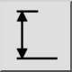
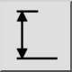

Menu: Dimension > Vertical
Shortcut: D, V
Commands: dimver | dimvertical | dv
Toolbar / Icon:
 

Menu: Dimension > Vertical
Shortcut: D, V
Commands: dimver | dimvertical | dv
Description:
This tool is provided for convenience and behaves essentially like the tool
for
rotated dimensions. The
only difference is that the angle is fixed to
90 degrees (vertical).